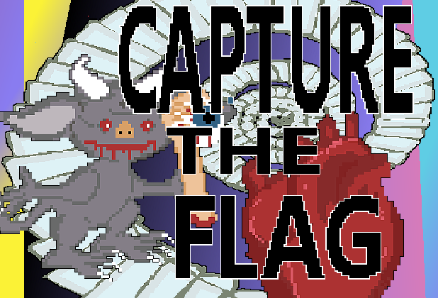
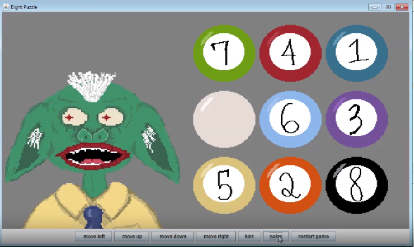
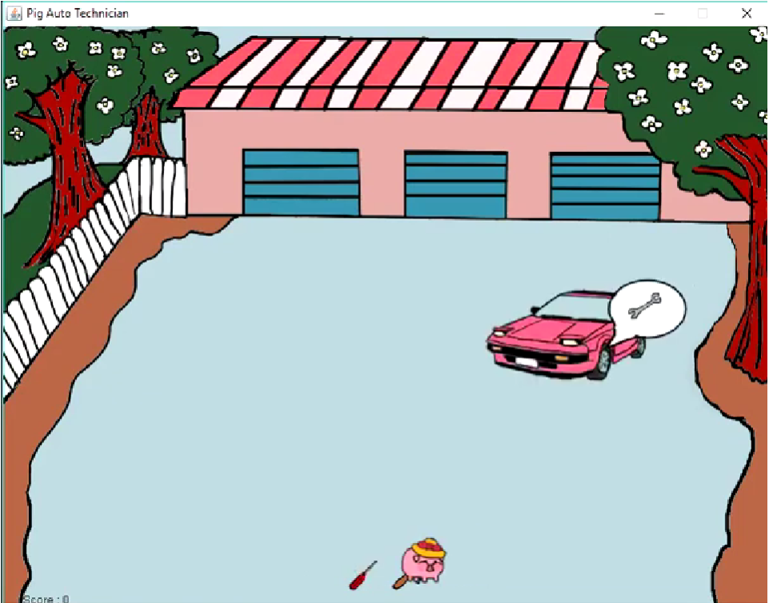

Capture The Flag (Summer 2023)
A game I created in a week for Kitsch Digital's "Scream Dunk" on Itch.io. Collect hearts to win each stage. Shoot projectile eyeballs and use special abilities to navigate the arena stage.
On The Farm (Spring 2023)
Virtual Reality Tower Defense Game
"On the Farm" was a project for a Virtual Reality programming class I took for my undergrad. It was Implemented using Unity game engine, as well as the Emerald AI and VRIF assets.
Peer Revue (Spring 2023)

Google Docs extension made to encourage scientists to write papers by gamifying the process. You collect points by typing a lot of words, and other possible productivity markers such as time spent looking at the document. These points can then be used in mini games. We implemented this extension by using the Google Apps Scripts ecosystem, as part of a project for a software engineering course I took for my undergrad.
8-Puzzle Game & Solver (Spring 2019)
An Interactive 8-Puzzle Game and Solver with an Animated Goblin to react to the players actions. This program utilizes A* Search Algorithm to solve 8-Puzzle. Written in Java using the Swing library for graphics. Completed in a couple weeks for a Data Structures and Algorithms class in community college
Pig Auto Tech (Fall 2018)
Be a pig and repair cars. A little game written in Java using the Swing library graphics. Completed in 2 weeks for a Java 2 class at community college